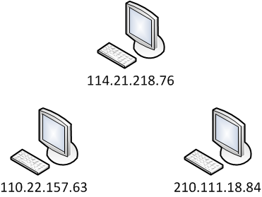
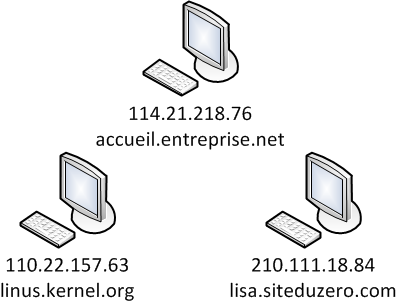
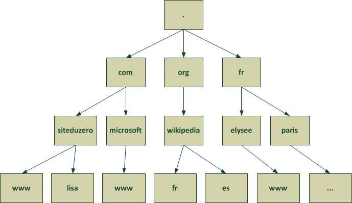
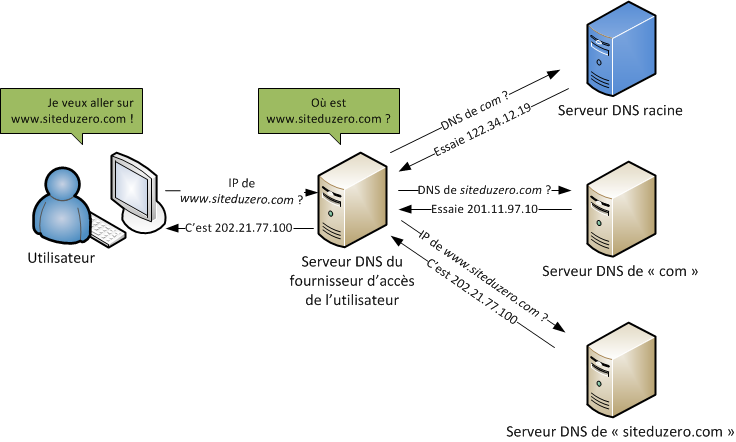
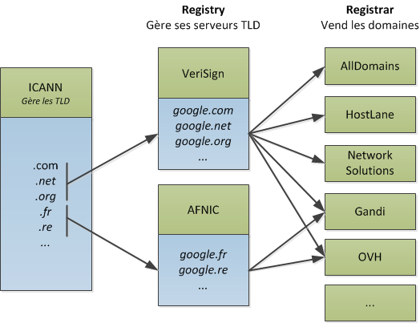
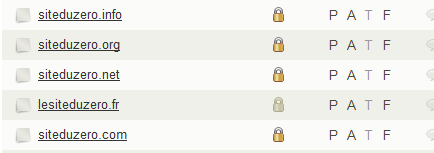
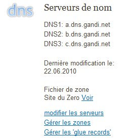
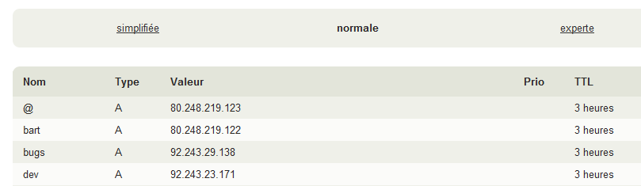
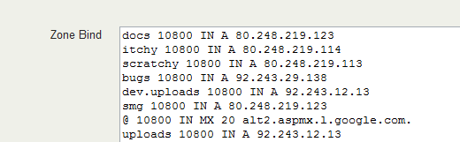

Vous avez probablement déjà entendu parler des noms de domaine, mais savez-vous vraiment ce que c'est ? Comment ça fonctionne, et comment on configure soi-même son nom de domaine ?
Dans ce cours, nous allons découvrir le fonctionnement des noms de domaine (qui est assez complexe), et mettre en place ensuite notre propre nom de domaine : achat du nom de domaine, installation d'un serveur de nom (bind9), gestion des zones DNS (A, CNAME, MX)...
Internet est un grand réseau composé de très nombreux ordinateurs. Pour qu'ils puissent communiquer entre eux, ils doivent pouvoir s'identifier. Sans nom, il serait impossible de différencier chacun des ordinateurs !
Pour résoudre ce problème, on a décidé d'attribuer un numéro d'identification unique à chaque ordinateur : c'est l'adresse IP.
Les adresses IP
Adresses IPv4
Les adresses IP, que vous avez très probablement rencontrées, ont la forme suivante :
124.217.229.14
Ce sont des séries de 4 nombres compris entre 0 et 255. Grâce à ces IP, chaque ordinateur peut avoir un numéro unique qui le rend identifiable :

Ces adresses IP constituées de 4 nombres sont les plus répandues à l'heure actuelle, on les appelle IPv4. Cependant, leur nombre se révèle assez limité : il n'y a en effet "que" 256 imes256 imes256 imes256 possibilités d'IP, soit 256^4 = 4294967296 (plus de 4 milliards). Ce nombre a l'air grand, mais on finira prochainement par l'atteindre avec la multiplication des ordinateurs et des serveurs reliés à Internet. C'est pourquoi ces IP ont vocation à être remplacées par un nouveau système : IPv6.
IPv6
La nouvelle forme d'IP, que l'on va rencontrer de plus en plus, a la forme suivante :
1703:01b8:43c4:85a3:0000:0000:a213:bba7
C'est une combinaison de plusieurs nombres hexadécimaux (d'où la présence des lettres a, b, c...), ce qui amène le nombre d'IP possibles à 2^{128}, ce qui représente un très très grand nombre ! Pour vous donner une idée, cela représente 667 millions de milliards d'adresses IP disponibles par mm² de la surface de la Terre ! :o
Les noms d'hôte
Les IP jouent un rôle fondamental dans l'identification des ordinateurs sur Internet, qui sont ainsi capables de se retrouver et de communiquer entre eux. Toutefois, pour un humain retenir une IP n'est pas facile (c'est déjà délicat pour 124.217.229.14, alors imaginez pour les nouvelles IP comme 1703:01b8:43c4:85a3:0000:0000:a213:bba7 !).
Pour résoudre ce problème, on a décidé qu'il serait possible d'associer un nom d'hôte à chaque machine, qui serait équivalent à écrire l'adresse IP. Ce nom d'hôte peut-être n'importe quel texte (comme monordinateur) mais il a le plus souvent la forme accueil.entreprise.net. Chaque ordinateur est identifiable soit par l'IP soit par le nom d'hôte :

Les ordinateurs utilisent les adresses IP pour se repérer (ils sont plus à l'aise avec des nombres :p ). Le nom d'hôte est seulement un alias qui revient à écrire l'IP.
Mais comment un ordinateur traduit-il un nom d'hôte que lui donne un humain en une adresse IP qu'il peut utiliser ?
Bonne question. La traduction nom d'hôte => IP est appelé résolution d'hôte. L'opération inverse est aussi possible : IP => nom d'hôte. On parle de résolution inverse.
Mais cette résolution ne fonctionne pas par magie. Pour traduire un nom d'hôte comme lisa.siteduzero.com en une IP comme 210.111.18.84, l'ordinateur a besoin d'une "table" qui contient toutes les équivalences.
Associer les IP et les noms d'hôtes
Au début, on a commencé à créer cette fameuse table sur chaque ordinateur dans un fichier appelé hosts (hôtes en anglais). Ce fichier existe toujours mais est très peu utilisé en pratique.
Si vous êtes sous Linux ou Mac OS X, vous pouvez le trouver sur votre disque dans /etc/hosts. Si vous êtes sous Windows, vous pouvez le trouver dans C:\Windows\system32\drivers\etc\hosts (vous pouvez l'ouvrir avec Bloc-Notes).
Ce fichier a la forme suivante :
127.0.0.1 localhost
127.0.1.1 mateo21-desktop
# The following lines are desirable for IPv6 capable hosts
::1 localhost ip6-localhost ip6-loopback
fe00::0 ip6-localnet
ff00::0 ip6-mcastprefix
ff02::1 ip6-allnodes
ff02::2 ip6-allrouters
ff02::3 ip6-allhosts
On y trouve une équivalence IP / nom d'hôte par ligne. Ainsi, on y lit qu'écrire 127.0.0.1 ou écrire localhost est équivalent. On y trouve par ailleurs des adresses IPv6 raccourcies (fe00::0 est une IPv6).
Ce système a quand même un défaut : pour que chaque ordinateur connaisse toutes les équivalences entre les IP et les noms d'hôtes, il faut recopier ce fichier sur tous les ordinateurs !
C'est vrai. Et quand on ajoute un ordinateur sur le réseau, il faut rajouter une ligne dans chaque fichier hosts de chaque ordinateur pour qu'il connaisse le nouveau nom d'hôte ! Cette technique était viable à l'époque où les réseaux étaient encore très petits, mais aujourd'hui avec environ 4 milliards d'ordinateurs sur Internet (et il s'en rajoute chaque jour) c'est impossible à maintenir !
Pour résoudre ce problème, on a inventé un système intelligent et un peu complexe : les DNS.
Devant la multiplication des ordinateurs sur le réseau, et donc des noms d'hôtes, Paul Mockapetris a inventé en 1983 les noms de domaine (Domain Name System, ou DNS).
Il s'agit d'un système hiérarchique qui permet de "découper" le réseau en un ensemble de domaines, eux-mêmes composés de sous-domaines, éventuellement composés de sous-sous-domaines, etc. Il y a donc plusieurs niveaux de domaines possibles.
Les différents niveaux de domaine
Prenons un nom de domaine que vous connaissez bien :
Il est composé de 3 niveaux de domaines, que l'on lit de droite à gauche :
com : c'est le domaine de premier niveau. On parle de "Top level domain", ou TLD.
siteduzero : en-dessous, il existe de très nombreux domaines de second niveau : siteduzero.com, microsoft.com, apple.com, dell.com...
www : chacun de ces domaines peut avoir des sous-domaines, le plus couramment utilisé sur le web étant "www". On a donc www.siteduzero.com, www.microsoft.com... Cela étant, ce n'est pas une obligation, et on peut imbriquer plusieurs sous-domaines. Ainsi sur le site de Dell, on tombe souvent sur une adresse comme www1.euro.dell.com.
Les domaines sont organisés hiérarchiquement entre eux comme ceci :

Comme vous le voyez, les domaines de premier niveau ("fr", "org", "com"...) dépendent d'un sommet appelé racine : c'est le point tout en haut du schéma.
Les serveurs DNS
Pour gérer ces très nombreux noms de domaines, et leurs sous-domaines, on a inventé un système de serveurs capables de gérer chacun un ou plusieurs niveaux de domaine. Ce sont les serveurs DNS.
Pourquoi créer plusieurs serveurs DNS ? Un seul serveur central ne suffirait pas ?
Non, car il serait trop fréquemment demandé. Imaginez que tous les ordinateurs du monde dépendent d'un seul serveur DNS pour connaître toutes les IP ! Si celui-ci venait à tomber en panne, Internet ne fonctionnerait tout simplement plus (et de toute façon un seul serveur ne peut pas supporter autant de requêtes).
On a découpé le problème en utilisant plusieurs niveaux de serveurs :
Les serveurs racine : au nombre de 13, nommés de a.root-servers.net à m.root-servers.net, ils contiennent l'adresse des serveurs DNS de chaque domaine de premier niveau (com, net, org, fr...).
Les serveurs DNS de premier niveau : il y en a plusieurs par domaine ("com", "net", "fr"...). Ils connaissent l'adresse des serveurs DNS de chacun des sous-niveaux. Ainsi, les serveurs DNS du domaine "com" connaissent l'adresse des serveurs DNS qui gèrent siteduzero.com, microsoft.com, apple.com...
Les serveurs DNS de second niveau : très nombreux, ce sont eux le plus souvent qui contiennent les équivalences nom de domaine / IP. Ainsi, le serveur DNS de siteduzero.com connaît tous les sous-domaines (www.siteduzero.com, lisa.siteduzero.com, scratchy.siteduzero.com, etc.) et connaît l'adresse IP de la machine qui gère chacun de ces domaines.
En plus de ces serveurs, chaque fournisseur d'accès à Internet (FAI) propose un serveur DNS qui fait office d'intermédiaire entre les internautes et les "vrais" serveurs DNS.
Alors, que se passe-t-il lorsqu'un visiteur demande à visiter un site web ? Voici comment cela fonctionne, résumé dans les grandes lignes dans un schéma :

En pratique, il y a plusieurs serveurs à chaque fois :
Il y a 13 serveurs racine, mais grâce à des fonctionnalités avancées de routage (appelées anycast), plusieurs centaines de serveurs peuvent se partager une même adresse IP. Il y a donc physiquement des centaines de serveurs qui gèrent la racine, mais "seulement" 13 IP différentes.
Il y a plusieurs serveurs de premier niveau à chaque fois pour chaque domaine...
Il y a aussi plusieurs serveurs DNS pour un domaine comme siteduzero.com (au moins 2) ce qui permet au système de continuer à fonctionner en cas de panne de l'un d'eux. Il y a donc toujours au moins un serveur DNS principal (primaire) et un serveur secondaire contacté en cas de panne du premier.
Ne vous laissez donc pas tromper par mon schéma précédent, que j'ai volontairement simplifié. Plusieurs serveurs peuvent répondre à chacune des questions. C'est d'ailleurs pour cela que les serveurs disent "Essaie cette IP" : si l'IP ne répond pas il sera toujours possible de contacter d'autres serveurs qui possèdent la même information.
Le cache DNS
Vous ne trouvez pas que cela fait beaucoup de requêtes pour trouver une adresse IP ? Comme vous le voyez, ce système distribué permet de gérer un très grand nombre de domaines mais il a quand même un défaut : s'il fallait faire toutes ces opérations à chaque fois qu'un utilisateur demande à résoudre un nom de domaine, cela serait très long et ferait beaucoup de trafic !
Les fournisseurs d'accès à internet (FAI) des internautes fournissent des serveurs DNS. Lorsque votre ordinateur doit résoudre un nom de domaine comme www.siteduzero.com, c'est donc le serveur DNS du FAI qui est contacté.
Le serveur DNS du FAI n'est pas un vrai serveur DNS qui connaît les correspondances "nom d'hôte / IP". C'est un intermédiaire. Il garde temporairement en mémoire les dernières résolutions de noms de domaine pour ne pas contacter systématiquement tous les serveurs derrière. Ainsi, si deux utilisateurs du même FAI demandent à aller sur www.siteduzero.com, le serveur DNS ne fera pas toutes ces opérations deux fois. Il donnera immédiatement la réponse qu'il a conservée en cache.
Alors, comment fait-on pour avoir son propre nom de domaine ? C'est ce que nous allons voir maintenant. :)
Tout d'abord, il faut savoir que les noms de domaines ne sont pas gratuits : il faut les acheter auprès d'un opérateur spécialisé et autorisé appelé registrar. De plus, ces noms ne peuvent pas être achetés à vie, seulement loués pendant une période donnée (pouvant aller jusqu'à 10 ans).
C'est un organisme américain, l'ICANN, qui gère les noms de domaine de premier niveau (TLD) comme .com, .net, .fr... Il délègue la gestion technique de ces TLD à différents opérateurs appelés registry : c'est l'AFNIC qui gère les domaines .fr et .re par exemple. Enfin chaque registry délègue à plusieurs registrar la vente des noms de domaine. Ceux-ci sont très nombreux. En France, citons Gandi, OVH, 1&1, Nerim...

Vous devez donc prendre contact avec un registrar pour acheter votre nom de domaine. Le registrar se chargera d'inscrire votre nom de domaine sur les serveurs DNS du registry (l'AFNIC en France) qui aura donc connaissance de votre nom de domaine.
Une fois votre nom de domaine acheté chez un registrar, vous devez lui indiquer les adresses IP de vos serveurs DNS primaires et secondaires.
Il y a deux cas de figure :
Soit vous voulez gérer vos serveurs DNS vous-même : dans ce cas vous donnez au registrar l'adresse IP de vos serveurs DNS qui gèrent le domaine que vous avez acheté.
Soit vous laissez le registrar gérer votre DNS sur ses serveurs (ce que la plupart d'entre eux proposent). Dans ce cas vous utilisez en général une interface web simplifiée fournie par le registrar.
Nous allons voir les deux cas ici. Pour l'installation de notre serveur DNS, nous utiliserons bind9 sous Linux, et pour la configuration "simplifiée" chez un registrar nous prendrons l'exemple de l'interface Gandi.
Installer soi-même son serveur DNS
Dans ce cas de figure (le plus complet mais aussi le plus complexe) vous devez disposer d'au moins 2 serveurs, afin que l'un fasse office de serveur DNS primaire et l'autre de serveur DNS secondaire.
Nous supposerons que vos serveurs sont sous Linux avec la distribution Debian.
Le programme le plus utilisé pour gérer un serveur DNS s'appelle "bind". Vous pouvez l'installer avec la commande suivante :
sudo apt-get install bind9
Il y a plusieurs fichiers de configuration à modifier. Ces deux-là sont les plus importants :
named.conf.local : contient la liste des noms de domaine gérés par le serveur DNS (siteduzero.com, siteduzero.org...).
db.monsite.com : contient la définition du nom de domaine et de ses sous-domaines (c'est-à-dire les IP associées à www.siteduzero.com, lisa.siteduzero.com, scratchy.siteduzero.com, etc.).
Vous les trouverez dans /etc/bind. Ouvrez donc pour commencer le premier :
nano /etc/bind/named.conf.local
Ajoutez-y une ligne de cette forme :
zone "siteduzero.com" {
type master;
allow-transfer {187.10.78.17;} ;
file "/etc/bind/db.siteduzero.com";
};
Trois lignes définissent le domaine, appelé "zone" :
type master : indique qu'il s'agit d'un serveur maître (il faut écrire slave pour les serveurs secondaires)
allow-transfer {187.10.78.17;} : indique les IP des serveurs secondaires autorisés à "copier" les données du serveur maître
file "/etc/bind/db.siteduzero.com" : indique le nom du fichier qui contient la définition détaillée du nom de domaine et de ses sous-domaines. On l'appelle en général db.mondomaine.com.
Ouvrez ensuite le fichier détaillant le nom de domaine (s'il n'existe pas, il sera créé) :
nano /etc/bind/db.siteduzero.com
Voici un exemple de fichier de description de zone :
; TTL (Time To Live)
$TTL 604800
; Informations générales
@ IN SOA siteduzero.com. root.siteduzero.com. (
2 ; Serial
604800 ; Refresh
86400 ; Retry
2419200 ; Expire
604800 ) ; Negative Cache TTL
;
; Enregistrements du domaine, des sous-domaines et correspondances IP
@ 10800 IN A 214.21.17.22
@ 10800 IN MX 10 aspmx.l.google.com.
@ 10800 IN MX 20 aspmx.2.google.com.
uploads 10800 IN A 92.143.23.113
dev 10800 IN A 92.13.88.102
www 10800 IN A 92.13.88.105
On distingue 3 parties :
TTL (Time to live) : indique combien de temps les autres serveurs DNS (par ex. ceux des FAI) sont autorisés à conserver les informations en cache. Ce nombre est exprimé en secondes : 3600 signifie donc "Une heure". Si vos DNS sont souvent mis à jour, mettez une valeur plutôt basse. En revanche, cela signifie que votre serveur DNS sera souvent sollicité.
Informations générales : sur plusieurs lignes, elles rappellent le nom du domaine et divers TTL :
Serial : à chaque fois que vous modifiez ce fichier, vous devez incrémenter le "Serial" pour indiquer que le fichier a changé.
Refresh : indique au bout de combien de temps vos serveurs esclaves doivent rafraîchir leur cache.
Retry : indique au bout de combien de temps les serveurs esclaves réessaieront d'accéder au serveur maître en cas d'indisponibilité.
Expire : indique au bout de combien de temps les serveurs esclaves considèreront que le serveur maître n'est plus disponible s'il ne répond pas.
Negative Cache TTL : c'est la durée de vie minimale du cache de chaque enregistrement qui suit plus bas dans le fichier (en secondes) si celle-ci n'est pas précisée.
Enregistrements du domaine : ce sont les détails du domaine, de ses sous-domaines, etc. C'est là qu'on fait notamment l'association entre l'IP et le nom de domaine.
La partie "Enregistrements du domaine" est la plus intéressante et c'est là que vous ferez la plupart de vos modifications. Si vous utilisez les serveurs DNS de votre registrar, celui-ci vous demandera de définir les enregistrements du domaine. Nous verrons un peu plus loin comment fonctionnent ces enregistrements.
Configurer son DNS via l'interface du registrar (ex : Gandi)
Votre registrar vous proposera le plus souvent une interface web de gestion de votre nom de domaine. Cela vous évite d'avoir à gérer 2 serveurs DNS vous-même, à y installer bind9... mais cela ne vous fera pas échapper à la configuration des enregistrements du domaine !
En clair, c'est une solution plus simple, mais il faut quand même connaître le fonctionnement des enregistrements du domaine (la fameuse troisième partie dont je viens de parler un peu plus haut).
Je vais prendre ici exemple sur le registrar français Gandi (bien connu des webmasters), que le Site du Zéro utilise pour ses noms de domaine.
Une fois connecté à votre interface de gestion des noms de domaine Gandi, vous avez sous les yeux la liste des noms de domaine que vous possédez :

Cliquez sur l'un d'eux pour ouvrir une page détaillant ce nom de domaine. Repérez la section suivante sur la page :

Vous y voyez la liste des serveurs DNS que Gandi a communiquée au registry : pour tous les internautes du monde entier, ce sont donc ces serveurs qui gèrent votre nom de domaine (et ses sous-domaines), et ce sont eux qui seront donc contactés. Ce sont les fameux serveurs ayant autorité, c'est-à-dire les serveurs qui connaissent les équivalences nom de domaine / IP pour ce domaine et ses sous-domaines. Le premier de la liste est le serveur maître, les autres sont des serveurs esclaves secondaires qui seront contactés en cas d'indisponibilité du premier.
Vous pouvez modifier les IP / nom d'hôte des serveurs DNS à utiliser pour votre nom de domaine. Dans le cas présent, nous utilisons les serveurs DNS fournis par Gandi (a.dns.gandi.net...). Nous laissons donc Gandi gérer le serveur bind pour nous.
Puisque nous utilisons les serveurs DNS de Gandi, nous devons les configurer via l'interface web qui nous est proposée. Cliquez sur le lien "Gérer les zones" pour configurer plus en détail votre nom de domaine. Vous arrivez sur l'interface "normale" de modification des enregistrements du nom de domaine :

Il s'agit d'une simple interface web qui revient à écrire le fichier de configuration pour bind que nous avons vu un peu plus haut. D'ailleurs, vous pouvez directement modifier ce fichier de configuration en cliquant sur "Expert". Faites-le :

Cette zone de texte correspond à la liste des enregistrements de votre nom de domaine, c'est la même chose que l'on voyait dans le fichier de configuration de bind (à l'exception des premières lignes comme le TTL).
Voyons maintenant comment configurer ces fameuses zones DNS, que l'on utilise son propre serveur bind ou que l'on passe par une interface web comme celle proposée par Gandi.
Reprenons la section de configuration des zones DNS. Elle ressemble à quelque chose comme ceci :
;Domaine TTL IN Type Valeur
@ 10800 IN A 214.21.17.22
@ 10800 IN MX 10 aspmx.l.google.com.
@ 10800 IN MX 20 aspmx.2.google.com.
uploads 10800 IN A 92.143.23.113
dev 10800 IN A 92.13.88.102
www 10800 IN A 92.13.88.105
Le fonctionnement de cette définition des zones est un peu complexe, donc soyez attentifs. ^^
Cette section définit un enregistrement par ligne, qui peut correspondre à la définition d'un sous-domaine mais aussi à celle de sous-serveurs DNS, de serveurs de mails et bien d'autres choses comme nous allons le voir.
On distingue 5 "colonnes" pour chaque ligne, qui doivent être espacées d'un ou plusieurs espaces :
Le nom du domaine ou sous-domaine concerné : par exemple, pour définir le sous-domaine "www.siteduzero.com" on écrit simplement "www". Quant au symbole @, il fait référence au domaine de base que l'on est en train de définir (par exemple ici c'est "siteduzero.com").
10800 : c'est le TTL spécifique à cet enregistrement. Il est facultatif, on n'est pas obligé de le préciser. Cela signifie par exemple que les autres serveurs DNS conserveront en cache ce sous-domaine pendant 10800 secondes.
IN : vous trouverez ce terme sur chaque ligne, c'est ce qu'on appelle la classe. On utilise toujours la classe IN sur Internet, donc insérez ce terme tel quel tout simplement.
A (ou MX, ou CNAME...) : c'est le type d'enregistrement. Certaines lignes servent en effet à associer une IP à un sous-domaine (type A), d'autres à définir des serveurs de mail pour le domaine (MX), etc. Nous ferons la liste des types d'enregistrements un peu plus loin pour éclaircir tout ça ne vous en faites pas. ;)
La valeur : c'est en général une IP ou un autre nom de domaine, qui définit l'enregistrement. Par exemple, pour les types A, c'est l'IP de la machine correspondant au sous-domaine.
Les différents types d'enregistrements
On s'intéresse ici à l'avant-dernière colonne de chaque ligne du fichier : le type d'enregistrement. Il existe de nombreux types d'enregistrements, nous allons ici nous concentrer sur les plus utilisés d'entre eux.
Type A : correspondance domaine / IPv4
C'est le type de base, le plus couramment utilisé. Il sert à établir une correspondance entre un domaine (ou sous-domaine) et une IP. Eh oui, tout ce tintouin de serveurs DNS pour finalement définir ici l'IP qui correspond au nom de domaine ! :p
Par exemple, avec la ligne :
www 10800 IN A 92.13.88.105
On associe le domaine www.siteduzero.com avec l'IP 92.13.88.105 ! Tous les ordinateurs du monde entier qui essaieront d'accéder à www.siteduzero.com sauront donc qu'il doivent contacter l'ordinateur ayant l'IP 92.13.88.105, qui sert de serveur au Site du Zéro.
Notez que, comme je vous le disais plus tôt, si vous utilisez le symbole "@" comme ceci :
@ 10800 IN A 214.21.17.22
... cela signifie que vous associez le domaine "siteduzero.com" avec l'IP 214.21.17.22. Il faut bien voir donc qu'écrire "siteduzero.com" n'est pas forcément équivalent à écrire "www.siteduzero.com".
Type AAAA : correspondance domaine / IPv6
C'est la même chose que le type A, mais pour faire une correspondance avec un ordinateur ayant une IPv6, c'est-à-dire une de ces nouvelles (et loooongues) IP.
www 10800 IN AAAA 2a00:1450:8004::68
Type CNAME : alias
CNAME (pour Canonical Name) permet de définir des alias de noms de domaine, c'est-à-dire des équivalences.
Par exemple :
uploads 10800 IN CNAME stockage.siteduzero.com.
Cela signifie qu'écrire uploads.siteduzero.com est strictement équivalent à écrire stockage.siteduzero.com. Ce sont deux noms de domaine équivalents.
Type NS : délégation de la gestion d'un domaine
Si vous gérez de très nombreux domaines, vous pouvez définir d'autres serveurs DNS qui gèrent ces domaines et leurs sous-domaines.
Supposons que j'aie de très nombreux sous-domaines de dev.siteduzero.com à gérer (web1.dev.siteduzero.com, web2.dev.siteduzero.com, sql1.dev.siteduzero.com, sql2.dev.siteduzero.com...). Plutôt que de définir tous ces enregistrements sur ce serveur DNS, je délègue leur gestion (et donc leurs champs de type A) à un autre serveur DNS :
dev 10800 IN NS 100.89.10.63
Type MX : serveurs de mail
Lorsqu'un internaute veut envoyer un e-mail à [email protected], il doit connaître l'adresse IP du serveur qui récupère les e-mails de "siteduzero.com". Les enregistrements MX sont faits pour cela.
@ 10800 IN MX 10 aspmx.l.google.com.
@ 10800 IN MX 20 aspmx.2.google.com.
Ici, nous utilisons par exemple les serveurs de mails de Google, d'où la présence des noms de domaine comme aspmx.l.google.com. (souvenez-vous qu'il faut mettre un point à la fin !).
Vous constaterez une particularité, c'est la présence d'un nombre entre MX et le nom du serveur de mails. C'est la priorité du serveur de mails. En effet, le serveur de mails ayant la priorité 10 sera contacté en premier, et s'il ne répond pas ce sera un serveur ayant un numéro supérieur (ici 20). Cela permet d'assurer une continuité de service en cas de panne du serveur principal.
Type TXT : chaîne de texte libre
Ce champ vous permet d'insérer le texte que vous souhaitez. On peut l'utiliser notamment pour donner des infos sur le propriétaire du nom de domaine.
@ 10800 IN TXT "Owner: Jacques Dupont (+33 6 43 09 10 32)"
Et les autres
Il existe de nombreux autres types d'enregistrement : WKS, PTR, LOC, HINFO... Ceux-là sont clairement moins utilisés que les précédents, bien qu'ils puissent se révéler intéressants.
Ainsi, LOC permet de définir la localisation géographique (coordonnées GPS) du serveur DNS, WKS définit une liste de services couramment utilisés (serveur IMAP, POP3...)... Globalement, ces types restent peu utilisés notamment pour des raisons de sécurité. HINFO sert par exemple à donner la configuration de la machine qui fait tourner le serveur DNS, ce qui peut être du pain bénit pour un hacker.
Ainsi s'achève notre découverte du merveilleux monde des DNS. Avouez que c'est quand même assez complexe, et pourtant c'est ce qui fait en grande partie qu'Internet fonctionne ! ;)
J'espère à travers ce tutoriel vous avoir fait comprendre les grandes lignes du fonctionnement des DNS. Vous devriez être en mesure de monter vos propres serveurs DNS et de les configurer désormais.
Je vous propose de terminer par une petite devinette qui devrait intéresser ceux qui ont bien suivi :
A votre avis, comment le serveur DNS du FAI fait-il pour savoir quelle est l'IP d'un serveur DNS racine comme d.root-servers.net. ?
Après tout, pour contacter un serveur racine et résoudre un nom de domaine comme d.root-servers.net., il faut déjà connaître l'adresse IP du serveur racine ! Alors, à votre avis, comment font les serveurs DNS des FAI du monde entier pour contacter l'un des 13 serveurs racine ? :p
Réponse :
Les adresses IP des serveurs racine sont en fait connues et écrites "en dur" sur tous les serveurs DNS du monde entier ! Pour accéder à d.root-servers.net., un serveur DNS sait déjà qu'il doit contacter l'IP 128.8.10.90 ! Il n'a donc pas besoin de faire de résolution de nom d'hôte.